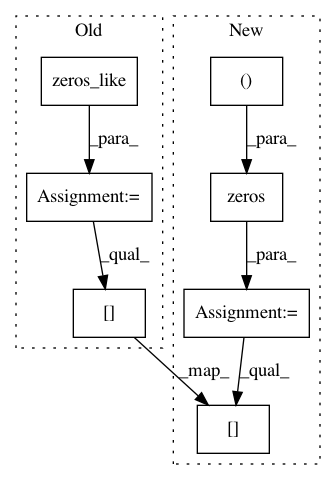

e323fcf525feda3f30b6cb61f21368ed7eab0299,geomstats/special_euclidean_group.py,SpecialEuclideanGroup,compose,#SpecialEuclideanGroup#Any#Any#,64
Before Change
translation_1 = point_1[:, dim_rotations:]
translation_2 = point_2[:, dim_rotations:]
composition = np.zeros_like(point_1)
composition_rot_mat = np.matmul(rot_mat_1, rot_mat_2)
composition[:, :dim_rotations] = rotations.rotation_vector_from_matrix(
composition_rot_mat)
composition[:, dim_rotations:] = (np.dot(translation_2,
np.transpose(
After Change
translation_1 = point_1[:, dim_rotations:]
translation_2 = point_2[:, dim_rotations:]
composition = np.zeros((np.maximum(n_points_1, n_points_2),
self.dimension))
composition_rot_mat = np.matmul(rot_mat_1, rot_mat_2)
composition_rot_vec = rotations.rotation_vector_from_matrix(
composition_rot_mat)
composition_translation = (np.dot(translation_2,
np.transpose(rot_mat_1,
axes=(0, 2, 1)))
+ translation_1)
composition_translation = np.squeeze(composition_translation, axis=1)
composition[:, :dim_rotations] = composition_rot_vec
composition[:, dim_rotations:] = composition_translation
composition = self.regularize(composition)
In pattern: SUPERPATTERN
Frequency: 3
Non-data size: 7
Instances
Project Name: geomstats/geomstats
Commit Name: e323fcf525feda3f30b6cb61f21368ed7eab0299
Time: 2018-02-05
Author: ninamio78@gmail.com
File Name: geomstats/special_euclidean_group.py
Class Name: SpecialEuclideanGroup
Method Name: compose
Project Name: scikit-image/scikit-image
Commit Name: 7e4840bd9439d1dfb6beaf549998452c99f97fdd
Time: 2020-07-19
Author: wwymak@gmail.com
File Name: skimage/color/colorlabel.py
Class Name:
Method Name: _label2rgb_avg
Project Name: analysiscenter/batchflow
Commit Name: bbb1b7ea374c109dcf968b3c693861b19cb7c024
Time: 2017-07-20
Author: rhudor@gmail.com
File Name: dataset/batch_image.py
Class Name:
Method Name: random_crop_numba